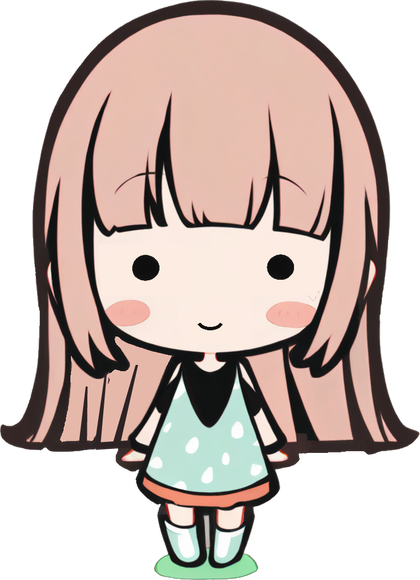
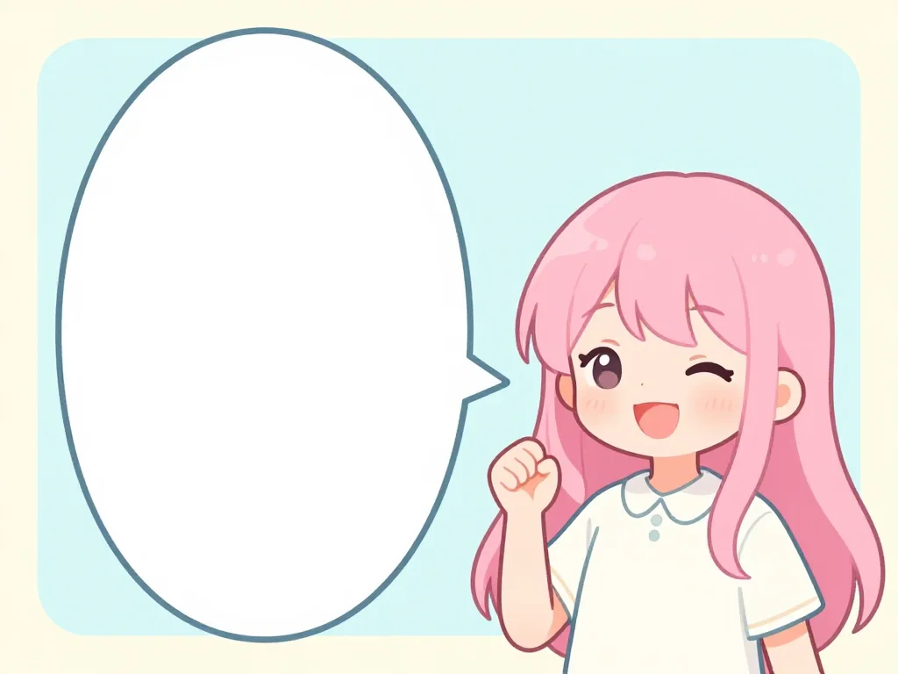

画像の文字、
コピーできたらいいのに。
example.jp/comic/episode-12

今日も
がんばろう！
✓
コピーしました（9文字）
囲むだけ。
そのまま貼り付け
今日もがんばろう！
縦書き
漫画のセリフ
筆文字
日本酒のラベル
長い文章
新聞のコラム
消しゴム
NEW
はんこを消してから読む
ゆがみ補正
NEW
斜めの写真も、平らにして読む
画像も文字も、
パソコンの外に出ません。
✓
通信ゼロ
✓
データ収集なし
✓
オフラインでも動く
国立国会図書館の OCR 技術を、
ブラウザの中だけで。
NDLOCR-Lite × ONNX Runtime Web（WebAssembly）
DEIM
文字のある所を探す
→
XY-Cut
読む順番を決める
→
PARSeq
文字を読み取る
オフラインOCR
画像の文字を、ブラウザの中だけで読み取る。
Chrome ウェブストアで無料
通信ゼロ
データ収集なし
ソースコード公開